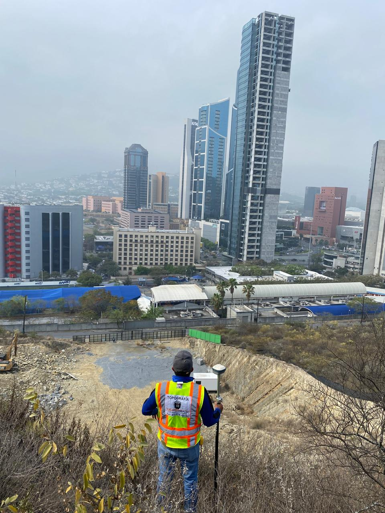
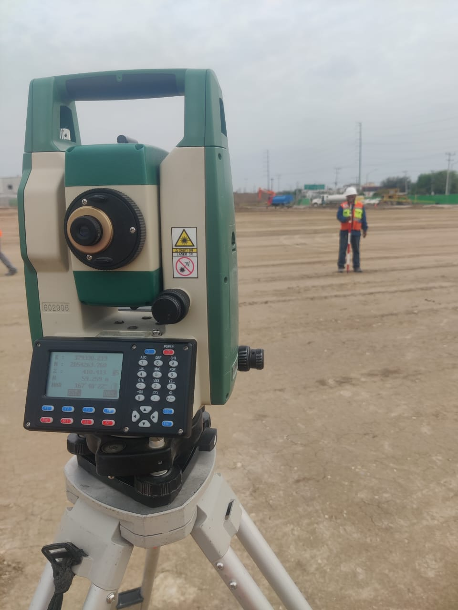
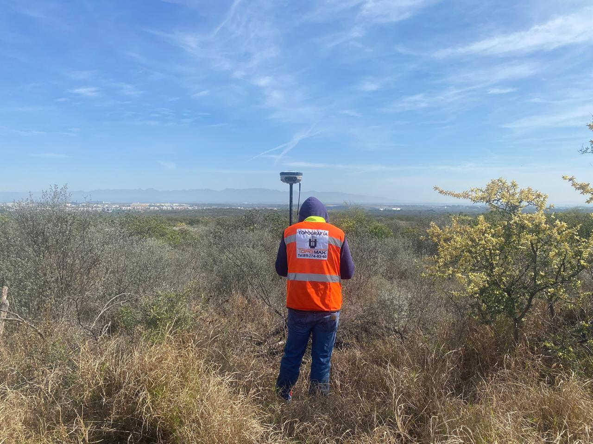
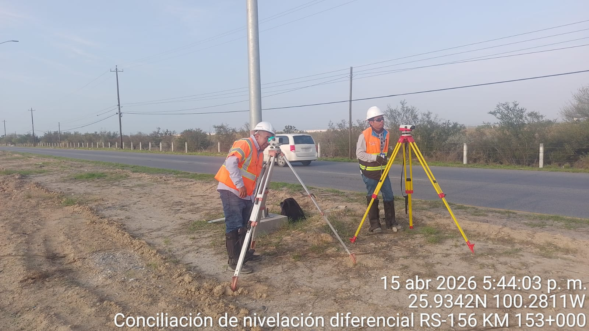
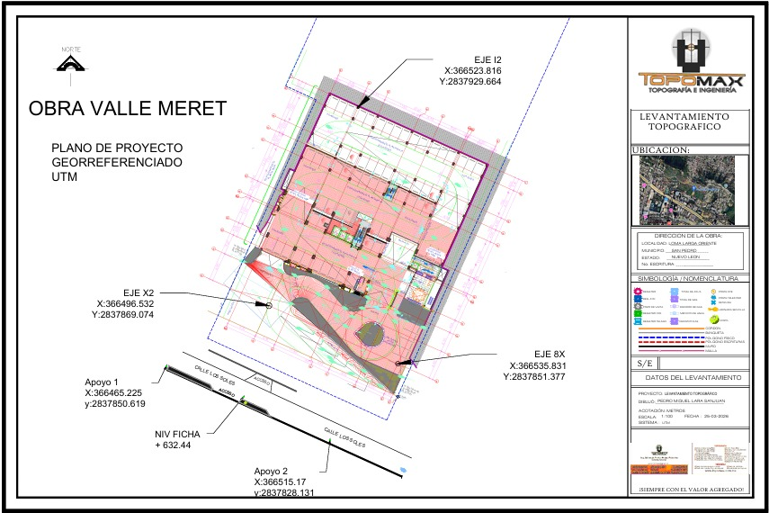

Obtén información precisa de tu terreno para planear y desarrollar tu proyecto de construcción u obra civil.
Cotizar Servicio
Define ejes, puntos y niveles de referencia para ejecutar los trabajos de construcción conforme al proyecto.
Cotizar Servicio
Verifica posiciones, coordenadas y dimensiones para apoyar el control técnico de tu proyecto.
Cotizar Servicio
Apoyo topográfico durante la ejecución de obra para dar seguimiento a los requerimientos técnicos del proyecto.
Cotizar Servicio
Procesamiento y organización de información topográfica para preparar los entregables acordados para tu proyecto.
Cotizar ServicioTOPOMAX (Topografía Máxima) Es una empresa con sede en el Estado de Nuevo León dedicada a realizar servicios topográficos abarcando obra civil, levantamientos topográficos, control geométrico, volumetrías, deslindes, trazos, nivelación, supervisión de obra etc. que fue pensada con la finalidad de prestar servicios profesionales de Topografía y proyectos en las diferentes ramas con carácter interdisciplinario, brindando apoyo técnico para resolver una gran diversidad de problemas que enfrentan los sectores público y privado.
Brindar soluciones prácticas y eficientes en el área de topografía, así como un servicio de calidad en Proyectos y obra civil en general con la calidad requerida dentro de los tiempos convenidos. Que rebase las expectativas del cliente, apoyados en el uso de equipos de alta tecnología y Paquetes computacionales.
CEL: 811-274-83-60
ADMTOPOMAX@gmail.com
Escobedo, Nuevo León, México
Bosque Sereno, Aguascalientes, Mexico